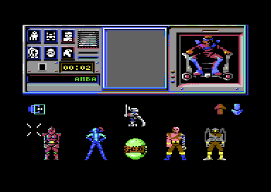
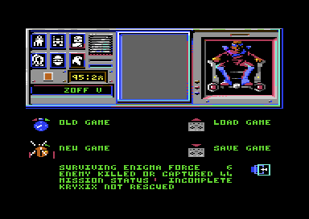

<meta charset="utf-8">
<meta name="viewport" content="width=device-width, initial-scale=1">
<title>Shadowfire</title>
<link rel="preconnect" href="https://fonts.googleapis.com">
<link rel="stylesheet" href="https://fonts.googleapis.com/css2?family=Lato:wght@400;700;900&family=IBM+Plex+Mono:wght@400;500&display=swap">
<style>
:root{
  --bg:#23262d; --paper:#e9e7e1; --surface:#ffffff; --surface-2:#f1efea; --line:#d5d3cc; --line-soft:#e0ded8;
  --ink:#2f3136; --ink-soft:#55585f; --ink-mute:#80838a;
  --link:#1f5fa8; --link-hover:#154480; --accent:#1f5fa8;
  --amber:#c25a00; --cyan:#1f5fa8; --coral:#d04a3a; --green:#2a8a4a; --violet:#4a5bd6; --hl:#fff0c2;
  --chip:#2f3136; --chip-ink:#ffffff;
  --c64blue:#40318d; --c64grey:#686868;
  --fd:'Lato',system-ui,sans-serif; --fb:'Lato',system-ui,sans-serif; --fm:'IBM Plex Mono',ui-monospace,Menlo,monospace;
  --col:1080px; --gx:68px; --fs:17px; --lh:1.6; --hw:900; --h1:46px; --h2:26px; --sy:48px; --pp:26px; --r:10px;
  --plate-shadow:0 1px 2px rgba(0,0,0,.05),0 4px 14px rgba(0,0,0,.05);
}
*{box-sizing:border-box}
html{background:var(--bg);min-height:100%}
body{background:var(--paper);color:var(--ink);font-family:var(--fb);font-size:var(--fs);line-height:var(--lh);max-width:var(--col);margin:0 auto;min-height:100vh;padding:0 0 4rem}
h1,h2,h3{font-weight:var(--hw);letter-spacing:-.01em;text-wrap:balance;color:var(--ink);margin:0}
.wrap{padding:0 var(--gx)}
.hero{padding:48px var(--gx) 8px;text-align:left}
.eyebrow{font-family:var(--fm);font-size:12px;letter-spacing:.08em;text-transform:uppercase;color:var(--ink-mute);margin:0 0 10px}
.hero h1{font-size:var(--h1);line-height:1.15;letter-spacing:-.02em;margin:0 0 14px}
.hero .sub{margin:0 0 .6em;color:var(--ink-soft)}
section{padding:var(--sy) 0 24px}
section:last-of-type{border-bottom:none}
.fig{font-family:var(--fm);font-size:12px;letter-spacing:.08em;text-transform:uppercase;color:var(--ink-mute);margin:0 0 10px}
h2.t{font-size:var(--h2);margin-bottom:12px}
.lede{color:var(--ink-soft);margin:0 0 30px}
.plate{background:var(--surface);border:1px solid var(--line);border-radius:var(--r);padding:var(--pp);box-shadow:var(--plate-shadow)}
.cap{font-size:14px;color:var(--ink-mute);margin-top:14px;line-height:1.55}
.cap b{color:var(--ink);font-weight:700}
code{font-family:var(--fm);font-size:.82em;background:var(--chip);color:var(--chip-ink);border-radius:4px;padding:2px 6px;white-space:nowrap}

.sf-cv{display:block;width:100%;height:auto;image-rendering:pixelated;background:#000;border-radius:4px}
.sf-stack{position:relative}
.sf-stack canvas+canvas{position:absolute;left:0;top:0;background:transparent;pointer-events:none}
.sf-bar{display:flex;flex-wrap:wrap;gap:8px;margin:0 0 14px}
.sf-btn{font:inherit;font-family:var(--fm);font-size:12.5px;background:var(--surface);border:1px solid var(--line);border-radius:6px;padding:5px 11px;color:var(--ink);cursor:pointer;line-height:1.3}
.sf-btn:hover{border-color:var(--ink-mute)}
.sf-btn[aria-pressed="true"]{background:var(--accent);border-color:var(--accent);color:#fff}
.sf-out{font-size:15px;color:var(--ink);margin:12px 0 0;min-height:3em;line-height:1.55}
.sf-out b{font-weight:700}
.sf-two{display:grid;grid-template-columns:minmax(0,1fr) minmax(0,1fr);gap:22px;align-items:start}
.sf-tbl{border-collapse:collapse;font-size:14px;width:100%;margin:4px 0 0}
.sf-tbl th,.sf-tbl td{text-align:left;vertical-align:top;padding:5px 8px;border-bottom:1px solid var(--line-soft)}
.sf-tbl th{font-weight:700;color:var(--ink-soft)}
.sf-tbl td.sf-n{font-family:var(--fm);font-size:13px;white-space:nowrap}
.sf-meter{display:inline-block;height:9px;border-radius:2px;background:var(--accent);vertical-align:1px;margin-right:8px}
.sf-steps{margin:0;padding-left:1.4em}
.sf-steps li{margin:0 0 .45em}
.sf-picks{display:flex;flex-wrap:wrap;gap:12px;align-items:flex-end}
.sf-picks figure{margin:0;text-align:center;font-size:13px;line-height:1.35}
.sf-picks .sf-n{font-family:var(--fm)}
.sf-grid{display:grid;grid-template-columns:repeat(auto-fill,minmax(52px,1fr));gap:6px}
.sf-grid button{background:#000;border:2px solid transparent;border-radius:5px;padding:4px;cursor:pointer;display:flex;align-items:center;justify-content:center;min-height:52px}
.sf-grid button[aria-pressed="true"]{border-color:var(--amber)}
.sf-grid canvas{image-rendering:pixelated;max-width:100%}
.sf-strip{display:grid;grid-template-columns:repeat(25,minmax(0,1fr));gap:3px;margin:0 0 6px}
.sf-strip button{font-family:var(--fm);font-size:10px;padding:5px 0;border:1px solid var(--line);border-radius:4px;cursor:pointer;color:#fff}
.sf-strip button[aria-pressed="true"]{outline:2px solid var(--ink);outline-offset:1px}
.sf-key{display:flex;flex-wrap:wrap;gap:6px 16px;font-size:13px;color:var(--ink-soft);margin:8px 0 0}
.sf-key i{display:inline-block;width:11px;height:11px;border-radius:2px;margin-right:6px;vertical-align:-1px}
.sf-code{font-family:var(--fm);font-size:12px;line-height:1.5;background:#1d1f24;color:#e9e7e1;padding:14px;border-radius:6px;overflow-x:auto;margin:0 0 14px;white-space:pre}
.sf-mono{font-family:var(--fm);font-size:13px}
.sf-ring{align-items:center;margin:14px 0 0;gap:6px}
.sf-ring small{opacity:.7;margin-left:4px}
.sf-ring>span{color:var(--ink-mute)}
@media (max-width:720px){.sf-two{grid-template-columns:1fr}.sf-strip{grid-template-columns:repeat(10,minmax(0,1fr))}}
</style>
<!-- tabs -->
<header class="hero">
  <p class="eyebrow">1985 · Beyond Software</p>
  <h1>Shadowfire</h1>
  <p class="sub">Combat works out how hard each weapon hits the next location and then never uses the answer, and the search for enemies reads past the end of its table into places where nobody stands.</p>
</header>
<main class="wrap">

<section id="range">
  <p class="fig">01 · Combat</p>
  <h2 class="t">Bug: every weapon hits the next location as hard as its own</h2>
  <p class="lede">Each weapon has two strengths, one for an enemy in the same location and one for an enemy next door, and the manual advises firing some weapons into the next location. Combat works out both and then uses only the first, everywhere.</p>
  <div class="plate">
    <pre class="sf-code" id="sf-range-code"></pre>
    <table class="sf-tbl" id="sf-weapons"></table>
    <p class="cap">The routine and the 36 weapons' strength bytes (<code>weapon_strength</code>, <code>$CF15</code>) from the listing. X is set to 0 at <code>$5C9B</code>, and the loop goes round with <code>INY</code> at <code>$5D3A</code> only. Run from a moment of play, the routine takes as much strength from an enemy next door to a defending Syylk as from one in his own location.</p>
  </div>
  <p>Before a round, combat fills an eight-byte table with the damage for each place the attacker can reach: the first entry from the high four bits of the weapon's strength, for its own location, and the seven after it from the low four bits, for the locations around it (<code>damage</code>, <code>$68D7</code>). The loop over the targets then reads the table with X, and X is set to 0 before the loop and never changed. Every target in reach takes the first entry, so a weapon's second strength is never used, and range makes no difference to any weapon.</p>
</section>

<section id="phantoms">
  <p class="fig">02 · Phantom enemies</p>
  <h2 class="t">Bug: five locations hold enemies that are not there</h2>
  <p class="lede">The check for an enemy in a location reads eight records past the end of the people, and the bytes it finds there say that someone alive is standing in five places.</p>
  <div class="plate">
    <table class="sf-tbl" id="sf-phantoms"></table>
    <p class="cap">The eight "records" after the fiftieth person, eighteen bytes each from <code>$CD92</code>, read as <code>enemy_at</code> (<code>$7250</code>) reads them: bit 1 of the first byte clear for alive, the third byte the location. The objects' bytes are as a new game starts them.</p>
  </div>
  <p><code>enemy_at</code> starts at person 8, the first enemy, and steps through fifty records of eighteen bytes. There are only 42 enemies, so its last eight records lie beyond the table: three spare pointers and then the objects' records. The first of them always reads as alive in location <code>$80</code>, MILITARY ACCESS BY PASS. The others change as objects are moved and picked up, and a new game puts phantoms in four more locations.</p>
  <p>Attack and Retreat both call <code>enemy_at</code>. A character told to retreat towards one of these locations refuses, with "CANNOT RUN IN THAT DIRECTION ENEMY IN THAT LOCATION", and an attack into one is accepted with nobody there to fight.</p>
</section>

<section id="pet">
  <p class="fig">03 · Zoff's pet</p>
  <h2 class="t">Bug: Zoff's invisible pet began as a bug</h2>
  <p class="lede">The mission briefing warns of the Phantom, Zoff's invisible pet alien, which roams the starship attacking characters at random. Its makers said in July 1985 that the Phantom was a bug in the Commodore 64 version, and that they had taken it out.</p>
  <div class="plate">
    <table class="sf-tbl">
      <tr><th>Where</th><th>What it says</th></tr>
      <tr><td>The booklet, mission briefing</td><td>"Beware the Phantom. Zoff's invisible pet alien roams the starship attacking characters at random."</td></tr>
      <tr><td>Steve Cain of Denton Designs, <i>Sinclair User</i> 40, July 1985, page 58</td><td>"On the Commodore 64 Shadowfire there was a bug. A phantom would appear and attack members of the Enigma team. We couldn't work out why, so we decided it was Zoff's pet. It turned out there was a spelling mistake on a single mnemonic in the machine code somewhere. We've taken the bug out now, so the bit in the booklet about Zoff's pet doesn't matter any more."</td></tr>
    </table>
    <p class="cap">The booklet's warning and the explanation Denton Designs gave for it. The magazine's interview is on the Internet Archive.</p>
  </div>
  <p>In the program on Beyond's tape, every attacker is one of the fifty people aboard. The game moves them one at a time, one each time the screen is redrawn, and after the fiftieth it starts again at the first (<code>irq_entity</code>, <code>$66D1</code>, and <code>$6197</code>). Combat (<code>$5BE6</code>) runs only for someone who is attacking, defending or retreating, and every one of the fifty shows on the view screen's map and in the list of people in a location. Beyond's disk and four cracked copies, one of them dated 30 April 1985, hold the same program.</p>
  <p>Which mnemonic was wrong, and what it did, is unknown. The one search in this program that runs past the end of the people is <code>enemy_at</code> (section 02), and its phantoms do not attack anyone: they block a retreat and take an attack with nobody there to fight.</p>
</section>

<section id="guard">
  <p class="fig">04 · A guard</p>
  <h2 class="t">Bug: one guard was meant to patrol and never moves</h2>
  <p class="lede">Person <code>$27</code>, a horned guard in XATOR SECURITY, has a patrol script like the guards around him, but the bit that sets him walking was left out of his record.</p>
  <div class="plate">
    <table class="sf-tbl" id="sf-guards"></table>
    <p class="cap">The records of the horned guards as a new game starts them, from <code>$CA0E</code>. Byte +7's top bit sends a guard along the script numbered in byte +8.</p>
  </div>
  <p>A guard walks a patrol when bit 7 of byte +7 is set. Person <code>$27</code> has <code>$50</code> there, bit 7 clear, with script 1 waiting in byte +8, so he stands in location <code>$40</code> all game while every other horned guard walks its route.</p>
</section>

<section id="clock">
  <p class="fig">05 · The clock</p>
  <h2 class="t">Secret: the clock runs on past 00:00</h2>
  <p class="lede">The mission has one hour forty minutes. When the clock reaches 00:00 the game carries on, and the clock counts up.</p>
  <div class="plate">
    
    <p class="cap">The emulator two seconds past zero: the clock reads 00:02, counting up, and the ticker has begun "AMBASSADOR KRYXIX HAS BEEN EXECUTED".</p>
  </div>
  <p>Past 00:00 the clock counts up from 00:01 (<code>clock_up</code>, <code>$CA04</code>). Kryxix, unless he is dead already, is executed, and "WAR HAS BEEN DECLARED BY THE REPUBLIC" follows him on the ticker. Play goes on. Counting up past 99:59, the clock shows a ten in its first digit for one second and turns back into a countdown from 99:59 (<code>clock_wraps</code>, <code>$6473</code>).</p>
</section>

<section id="portraits">
  <p class="fig">06 · The portraits</p>
  <h2 class="t">Bug: the portraits never show the top line of their cells</h2>
  <p class="lede">A portrait rolls onto the monitor a line at a time. The roll copies seven of each cell's eight lines, and the eighth, the top one, shows the line below it again.</p>
  <div class="plate">
    <div class="sf-two">
      <figure style="margin:0"><canvas id="sf-port-bytes" class="sf-cv" width="240" height="192"></canvas><p class="cap">Syylk's portrait as its bytes hold it (<code>$F38F</code>).</p></figure>
      <figure style="margin:0"><canvas id="sf-port-screen" class="sf-cv" width="240" height="192"></canvas><p class="cap">The monitor in a frame recorded in the emulator.</p></figure>
    </div>
    <div class="sf-bar" style="margin-top:12px"><button type="button" class="sf-btn" id="sf-port-mark" aria-pressed="false">Mark the lines that differ</button></div>
    <p class="sf-out" id="sf-port-out"></p>
  </div>
  <p><code>show_portrait</code> (<code>$48B1</code>) makes seven passes. Each copies one pixel line of all 80 cells, line 7 first and line 1 last, into the top line of every cell row, then rolls the rows down a line, like a television picture settling. Line 0 of each cell is never copied, so after the last roll the top line holds line 1 for a second time: 80 of each portrait's 640 bitmap bytes are never seen.</p>
</section>

<section id="music">
  <p class="fig">07 · The music</p>
  <h2 class="t">Secret: the music in play starts silent</h2>
  <p class="lede">The manual says the arrows on the team screen turn the music on and off. They fade it in and out, and a new game starts with it faded out.</p>
  <p>The in-game tune plays all along, but its two melody voices are pulse waves whose width is the byte at <code>$1603</code>, and a new game leaves it at 0, a pulse of no width (<a href="index.html#music">How it works</a>). The up arrow adds one to it on every pass of the screen's loop while fire is held, up to <code>$40</code>, and the down arrow takes one off, down to 0. Holding fire on the up arrow for a third of a second takes it from 0 to <code>$11</code>.</p>
</section>

<section id="destruct">
  <p class="fig">08 · The self-destruct</p>
  <h2 class="t">Bug: the self-destruct takes 256 seconds where the manual says four minutes</h2>
  <p class="lede">Armed with its card, the self-destruct unit counts down a byte that starts at 0, and its first second takes it to 255.</p>
  <div class="plate">
    
    <p class="cap">The emulator 256 seconds after the unit was armed, with the team still aboard the attack craft: Zoff V destroyed, 44 counted, and the mission incomplete with Kryxix not rescued.</p>
  </div>
  <p><code>activate_destruct_unit</code> (<code>$747F</code>) sets the countdown to 0 and arms it, and the interrupt takes a second off it each second, so it runs out after 256 rather than the 240 of four minutes.</p>
  <p>When the countdown runs out, the team members still aboard Zoff V die with Kryxix and Zoff, the 42 enemies are counted as killed, Kryxix and Zoff take the count to 44, and the ship counts as destroyed (<code>$61D1</code>).</p>
</section>

<section id="untouchable">
  <p class="fig">09 · Kryxix and Zoff</p>
  <h2 class="t">Secret: Kryxix and Zoff cannot be hurt</h2>
  <p class="lede">Zoff walks the ship like anyone else and can be captured, but weapons cannot touch him, or the ambassador he holds.</p>
  <p>In combat an enemy hits the six team members and a team member hits people 8 to 49 (<code>$5BFF</code>). Kryxix is person 6 and Zoff person 7, so they are on neither list: they never fight and never lose strength. Zoff is beaten by beaming him aboard the attack craft, which counts as his capture, and Kryxix is rescued the same way (<code>$5A68</code>).</p>
</section>

<section id="patrols">
  <p class="fig">10 · Patrols</p>
  <h2 class="t">Secret: guards walk home four times as fast as they walk out</h2>
  <p class="lede">A patrol script gives a time for each step, and the guard uses it differently in each direction.</p>
  <p>Walking a script forwards, each step takes its time multiplied by four seconds; walking it back, the time as it stands (<code>$5E22</code>). The <a href="levels.html">Maps / levels</a> tab draws each script's route.</p>
</section>

<section id="view">
  <p class="fig">11 · The view screen</p>
  <h2 class="t">Bug: one cell of the view screen never shows anybody</h2>
  <p class="lede">The view screen's map has seventeen places where an icon can appear, and the search for people fills only sixteen of them.</p>
  <p><code>find_view_locations</code> (<code>$6BB7</code>) counts X down from 15 to 0 through the seventeen cells of the view, so cell 16, two tiles right of the character and two down, is never searched. Anyone standing in a location there is not shown on the view screen.</p>
</section>

<section id="shake">
  <p class="fig">12 · The explosion</p>
  <h2 class="t">Secret: Zoff V's explosion shakes the screen to the game's own code</h2>
  <p class="lede">When the ship blows up, the screen shakes and flashes for 256 frames, and the shaking comes from reading the program as if it were a table of random numbers.</p>
  <div class="plate"><pre class="sf-code" id="sf-shake-code"></pre><p class="cap"><code>shake_screen</code> from the listing.</p></div>
  <p><code>shake_screen</code> (<code>$4AD7</code>) sets the screen's fine scroll, up and down and side to side, from the bytes at <code>$4000</code> and <code>$5000</code> onwards, one byte of each a frame, and flashes the border and background through sixteen colours. The bytes at <code>$4000</code> are the start of the game's code, and those at <code>$5000</code> the middle of a routine: the explosion's movement is the program's own instructions.</p>
</section>

<section id="demo">
  <p class="fig">13 · The demonstration</p>
  <h2 class="t">Bug: the demonstration ends by clicking its way out</h2>
  <p class="lede">Left alone on the title, the game plays itself by walking the cursor through a script of 55 points. The script has no end mark: it stops by choosing Quit twice.</p>
  <p><code>input_demo</code> (<code>$5570</code>) would end the demonstration at a point whose second byte is <code>$FF</code>, and none has one. The last two points are the team screen's Quit and the start menu's Quit, which goes back to the control menu, and the control menu turns the demonstration off (<code>$41FC</code>). The demonstration ends the same way every time it runs.</p>
</section>

<section id="speech">
  <p class="fig">14 · Leftovers</p>
  <h2 class="t">Secret: rules for a talking program are left in three corners of memory</h2>
  <p class="lede">Three runs of unused bytes hold text that has nothing to do with the game: pronunciation rules in the form a text-to-speech program reads.</p>
  <div class="plate"><table class="sf-tbl" id="sf-speech"></table><p class="cap">The bytes from the listing, shown as text (the top bit of a rule's last character marks its end).</p></div>
  <p>Each rule names a spelling in brackets and what it sounds like after the equals sign: "(THOSE)=DHOHZ". That is the form of the rules in Reciter, the part of the speech program S.A.M. that turns English spelling into sounds. The bytes sit after the colour matrix, after the colour source and after the demonstration's script, in places the game never reads.</p>
</section>

</main>
<footer style="margin:16px 0 0;padding:22px var(--gx) 0;border-top:1px solid #e0ded8;font-family:'IBM Plex Mono',ui-monospace,Menlo,monospace;font-size:12px;color:#80838a"><a href="https://github.com/gamesexplained/gamesexplained" style="color:#1f5fa8;text-decoration:none">GitHub</a> · <a href="https://discord.gg/3V9GWyRDWV" style="color:#1f5fa8;text-decoration:none">Discord</a><br>© Games Explained contributors. Write-ups, facts and symbol maps are available under <a href="https://creativecommons.org/licenses/by-sa/4.0/" style="color:#1f5fa8;text-decoration:none">CC BY-SA 4.0</a>; code under <a href="https://opensource.org/licenses/MIT" style="color:#1f5fa8;text-decoration:none">MIT</a></footer>
<script src="../../lib/c64.js"></script>
<script>
/* sf-data */
// Reading Shadowfire's tables out of its memory, m (64 KB, as C64.load gives it from the listing).
// Text is one byte a character (0-9 the digits, 10-35 A-Z, $24 a space, $39 a new line) ended by
// $38; a byte from $80 is one of the 71 shared words, through the pointers at $81B1 (msg_words).
// Locations: two pointer tables ($B1E4 for $00-$7F, $B2E4 for $80-$A3), each record the map
// column and row, a mask of exits (bit 7 up, then clockwise), two bytes an exit (the location it
// leads to; the distance in bits 0-2 and the door in bits 3-7), then the location's name.
const SF = (function () {
  const w = (m, a) => m[a] | m[a + 1] << 8;
  const DIRS = ['up', 'up-right', 'right', 'down-right', 'down', 'down-left', 'left', 'up-left'];
  const SPECIAL = { 0x24: ' ', 0x25: '.', 0x26: ',', 0x27: '%', 0x28: '|', 0x29: '|', 0x2A: ':', 0x39: '\n' };
  function text(m, a, depth) {
    let s = '';
    for (let n = 0; n < 200 && m[a] !== 0x38; n++, a++) {
      const c = m[a];
      if (c >= 0x80) s += (depth || 0) < 4 ? text(m, w(m, 0x81B1 + 2 * (c & 0x7F)), (depth || 0) + 1) : '';
      else if (c < 10) s += String.fromCharCode(48 + c);
      else if (c < 36) s += String.fromCharCode(55 + c);
      else s += SPECIAL[c] || '?';
    }
    return s;
  }
  const lines = (s) => s.split('\n').map((l) => l.replace(/ +/g, ' ').trim()).filter(Boolean);
  const locPtr = (m, L) => L < 0x80 ? w(m, 0xB1E4 + 2 * L) : w(m, 0xB2E4 + 2 * (L - 0x80));
  function location(m, L) {
    const p = locPtr(m, L), mask = m[p + 2], exits = [];
    let q = p + 3;
    for (let d = 0; d < 8; d++) if (mask & (0x80 >> d)) { exits.push({ dir: DIRS[d], d, to: m[q], dist: m[q + 1] & 7, door: m[q + 1] >> 3 }); q += 2; }
    return { L, at: p, x: m[p], y: m[p + 1], mask, exits, name: lines(text(m, q)).join(' ') };
  }
  const LOCATIONS = 0xA4;
  const TEAM = ['Syylk', 'Sevrina', 'Manto', 'Maul', 'Zark', 'Torik'];
  const who = (e) => e < 6 ? TEAM[e] : e === 6 ? 'Kryxix' : e === 7 ? 'Zoff' : 'Enemy ' + e;
  // Entities: 50 records of 18 bytes from $CA0E. +0 status, +2 location, +4 strength, +5 agility,
  // +6 stamina; an enemy's +5 to +8 hold its patrol (+7 bit 7 a script, +5 bit 7 a chain).
  function entity(m, e) {
    const p = 0xCA0E + 18 * e, r = m.slice(p, p + 18);
    return { e, at: p, name: who(e), status: r[0], loc: r[2], strength: r[4], agility: r[5], stamina: r[6], r };
  }
  // Objects: 54 records of 7 bytes from $CD98: flags, location (or carrier), weight, picture, routine.
  function object(m, k) {
    const p = 0xCD98 + 7 * k;
    return { k, at: p, flags: m[p], where: m[p + 1], weight: m[p + 2], picture: w(m, p + 3), routine: w(m, p + 5), strength: m[0xCF15 + k] };
  }
  // Patrol scripts: pointers at $BDC0; a script is its length, its start, then (time, location) pairs.
  function patrol(m, i) {
    const p = w(m, 0xBDC0 + 2 * i), n = m[p], steps = [];
    for (let k = 1; k < n / 2; k++) steps.push({ time: m[p + 2 * k], to: m[p + 2 * k + 1] });
    return { i, at: p, start: m[p + 1], steps };
  }
  return { w, DIRS, text, lines, location, LOCATIONS, entity, object, patrol, TEAM, who };
})();
// end of sf-data
</script>
<script>
/* sf-picture */
// draw_picture ($42D9): a picture is its width in cells and its height in cell rows, the bitmap
// cell row by cell row (8 bytes a cell), then the colours packed three bytes to two cells, in one
// run from the first cell to the last: the first of a pair takes byte 0 as its screen colours and
// byte 1's low nibble as its colour RAM; the second takes byte 1's high nibble and byte 2's low
// one as its screen colours, and byte 2's high nibble as its colour RAM.
function sfPicture(m, p) {
  const wd = m[p], ht = m[p + 1], n = wd * ht;
  let q = p + 2;
  const bits = m.slice(q, q + n * 8), scr = new Uint8Array(n), cram = new Uint8Array(n);
  q += n * 8;
  for (let i = 0; i < n; i++) {
    if (!(i & 1)) { scr[i] = m[q]; cram[i] = m[q + 1] & 15; q += 1; }
    else { scr[i] = (m[q] >> 4 | m[q + 1] << 4) & 255; cram[i] = m[q + 1] >> 4; q += 2; }
  }
  return { w: wd, h: ht, bits, scr, cram };
}
// Cells of the multicolour bitmap into an RGBA image: pixel pairs %00 the background, %01 the
// screen byte's high nibble, %10 its low nibble, %11 the colour RAM nibble.
function sfPaint(pic, bg, rgb) {
  const W = pic.w * 8, H = pic.h * 8, px = new Uint8ClampedArray(W * H * 4);
  for (let cy = 0; cy < pic.h; cy++) for (let cx = 0; cx < pic.w; cx++) {
    const i = cy * pic.w + cx, cols = [bg, pic.scr[i] >> 4, pic.scr[i] & 15, pic.cram[i] & 15];
    for (let y = 0; y < 8; y++) {
      const b = pic.bits[i * 8 + y];
      for (let x = 0; x < 4; x++) {
        const c = rgb[cols[(b >> (6 - 2 * x)) & 3]];
        for (let k = 0; k < 2; k++) {
          const o = ((cy * 8 + y) * W + cx * 8 + x * 2 + k) * 4;
          px[o] = c[0]; px[o + 1] = c[1]; px[o + 2] = c[2]; px[o + 3] = 255;
        }
      }
    }
  }
  return { w: W, h: H, px };
}
// end of sf-picture
</script>
<script>
// The frame of the portrait section, as kit/c64/frame.py recorded and trimmed it.
const SF_FRAME = {"schema":1,"standard":"PAL","lines":312,"cycles":63,"about":"","vic":[56,201,136,56,184,56,136,98,184,98,0,0,0,0,0,0,0,59,0,209,0,31,216,30,57,122,241,0,1,30,0,31,240,240,241,242,243,241,240,240,251,251,251,251,246,247,252],"cia2":[151,63],"cpu":[47,53],"writes":[],"colour":"Bg8GAQEPAQ8BAQYGDwEOAQEBAQEBAQEBAQYJAQENCQEBAQ0BDQEDDAEBAQ8BAQYBAQ8LCwEGDg4CAggCAggCAggGBgkMDAwMDw8PCwsLDAMBAQEPAQEMAQECCwwPCwEODgIFAgIFAgIIBgsLAQcHBAECAgIFAgMGDw8PBgwGAQIPAg8PAw8BCA4CDgICBQICBQMLCwcHAQgBBAYGAgYDBgYBAQYBAQ8BAQICCwsLBgICAg4CAg4CAgUDAgsIBwEBBwICBAICAwYGAQEGAQEPAQEGDwYPBgYCAgICAAACAgUCAwsLBwICAgICAggICAMGAQYBAQEGCQwMDAwDDAMGDgICAgAAAgICAgMLCwECAgQBAgICBQIDBgEPDwAPAQsHBwcHBwwLAQ4JAgICAgICAgIDCwsCAgICAQgCBgIGAwYBAg8CAgIPAg8PDw8JAgYCBwcOAgICAgICAw8LCAIBAQcCAggCAgMGDwUFBQUFBQUFBQUFBQ4BAgICDgcHDgMCBQMPCwcCAgICAgIICAgPBg8MDAwMDAwMDAwMDAwGBgICAg4FDgIODgIDBQwLCgoBCgoBAQEPDwYDAwMGBgMDBgMGBgMDAwkDBgYGCQkJAwkJCQMPDwYGBgMGBgYGDwYGDAYGDg4OBgYGBgYGBgYGBgIGBgYGAgYGBgICBQUFBQUFBQUFBQsLCwUFBQUFBQUFBQUFBQUFBQUFBQUFBQUFBQUFBQUFBQUFBQUFBQUFBQUDAwoFBQUFBQUFBQUFBQUFBQUFBQUFBQUFBQUFBQUFBQUFBQUFBQUFAgoKBQUFBQUFBQUFBQUFBQUFBQUFBQUFBQUFBQUFBQUFBQUFBQUFBQUFBQUFBQUFBQUFBQUFBQUFBQUFBQUFBQUFBQUFDw8PBQUPDw8FBQUDAwMFBQUFBQUFBQUFBQUFBQUFBQUFBQUFBQUFBQ8LDwUFDwsPBQUFAwYGBQUFBQUFBQUFBQUFBQUFBQUFBQUFBQUFBQUFBQUFBQUFBQUFBQUFBQUFBQUFBQUFBQUFBQUFBQUFBQUFBQUFBQUFBQUFBQUFBQUFBQUCAgoFBQUFBQUFBQUFBQUFBQUFBQUFBQUFBQUFBQ8PDwUFBgMDBQUFAggFBQUFBQUFBQUFBQUFBQUFBQUFBQUFBQUFBQUPCw8FBQYDAQUFBQUFBQUFBQUFBQUFBQUFBQUFBQUFBQUFBQUFBQUFBQUFBQUFBQUFBQUDBwMFBQUFBQUFBQUFBQUFBQUFBQUFBQUFBQUFBQUFBQUFBQUFBQUFBwcHBQUFBQUFBQUFBQUFBQUFBQUFBQUFBQUFBQUFBQUFBQUFBQUFBQIPBg4JDQACDwgGBQgEAwUCCAAJDQANAQ==","ram":[{"a":2304,"b":"AAAAD///D//gD/8AD/wAD/gAD+AAD8AAD4AAD4AADwAADgAADgAADAAADAAADAAACAAACAAACAAACAAACAAA"},{"a":2368,"b":"AAAA///wB//wAf/wAH/wAB/wAA/wAAfwAAPwAAHwAADwAADwAABwAABwAAAwAAAwAAAwAAAQAAAQAAAQAAAQ"},{"a":2432,"b":"CAAACAAACAAACAAADAAADAAADAAADgAADgAADwAADwAAD4AAD8AAD+AAD/AAD/gAD/4AD/+AD//gD///AAAA"},{"a":2496,"b":"AAAQAAAQAAAQAAAQAAAQAAAwAAAwAAAwAABwAABwAADwAAHwAAHwAAPwAAfwAB/wAD/wAP/wB//w///wAAAA"},{"a":2560,"b":"AoIAEIIEEIIEBIIQBIIQAYJAAYJAqoKqAAAAAAAAAAAAAAAAqoKqAYJAAYJABIIQBIIQEIIEEIIEAIIAAAAA"},{"a":3072,"b":"wcbPxsbGxmzGxsHPxsZh5uZu5ubm5m7mbuHNycnJzcnJycnJycnJY2wREcYREfwREWz8HLy8FhXo5eXo6Ojl6OgT/CyiKqKiLCwsLMLComxsERHGERFiERFsHPE8bG4YMr7r4+Po4+HoMvz854HhJiiHh+gm56I8bGzGwRb8xsEs/BxsHGxu6LK+Yujo6Ohu6GL8/ImBhxaCYoSC6CgqPPwREfwREWwREby8LCws4ejrvmJogYJobuHy/M+SSIcogufo4kjoKjz8ERHPERFsERHLbM/G/OHo6Ou3AACHgSHo8vz8KIRo6ZPo5EJCJKI8z3zGxsbPbLm5aZPJk2zhEujl5wAA5+Xo6PL8z+eB4SYoh4foJueiw/z8/HGMPJzzV/f397n85oLyt+v/5ejj4+jy/PyJgYcWgmKEgugoosP8zyzP/Pyc/CwsLCz8/OHosrJi5+fo4+PoYpz8kkiHKILo6OJI6KLDxvj4+Pj4+Pn49vj4+Gxu6OvjYuiOguJu4WIs/CiEaOiT6ORCQiQqw8ZjY2NjY2NjY2NjY2M84ejo67foKI6BIegmbLr6+/v68fH6+vqhosPPbGw8PGxsPGw8PGxsbGNpk5M5NjY2ljZjY2xsbDw8PGw8PDw8bDw85j7jJoZo7Ozs7Ozs7C4sLGwsLCwsbCwsLGxstrZrtra2tra2tmVlZSkpKSkpKSkpKSkpKSkpKSkpKSkpKSkpKSkpKSkpKSkpKSkpKSkpKSmioiUpKSkpKSkpKSkpKSkpKSkpKSkpKSkpKSkpKSkpKSkpKSkpKSkpWhIlKSkpKSkpKSkpKSkpKSkpKSkpKSkpKSkpKSkpKSkpKSkpKSkpKSkpKSkpKSkpKSkpKSkpKSkpKSkpKSkpKSkpKSkp29slKSlLSyUpKSmioiUpKSkpKSkpKSkpKSkpKSkpKSkpKSkpKSkpKcvPxSkpy88sKSkpVhIlKSkpKSkpKSkpKSkpKSkpKSkpKSkpKSkpKSkpKSkpKSkpKSkpKSkpKSkpKSkpKSkpKSkpKSkpKSkpKSkpKSkpKSkpKSkpKSkpKSkpKSmhoSUpKSkpKSkpKSkpKSkpKSkpKSkpKSkpKSkpKRsbJykp6OHhKSkpGhIoKSkpKSkpKSkpKSkpKSkpKSkpKSkpKSkpKSnLz8cpKejh4ykpKSkpKSkpKSkpKSkpKSkpKSkpKSkpKSkpKSkpKSkpKSkpKSkpKSkpKSnnk+cpKSkpKSkpKSkpKSkpKSkpKSkpKSkpKSkpKSkpKSkpKSkpKSkpOJM4KSkpKSkpKSkpKSkpKSkpKSkpKSkpKSkpKSkpKSkpKSkpKSkpKQ=="},{"a":4088,"b":"KCQlJic="},{"a":8192,"b":"VaqQk5CQkJBV/wCqABVfqlWqAP8AVar/Vf8AqgBV15ZV/wCqAFX/qlX/AKoAVf+qVf8AqgBV15aq/wBVAKr/VVX/AKoAVf+qVf8AqgBV1ZVVqgD/AFVVmVWqAP8AVVWqVf8AqgBVVf9V/wCqAFVV9f+qAFX/amBhVf8AqlX/AKpV/wCqVf8Aqqr/AFWq/wBVVf8AqlX/AKpV/wCqVf8AqlX/AKpV/wCqVf8AqlX/AKqq/wBVqv8AVVX/AKpV/wCqqv8AVar/AFVVqgPwUKAg4FWqAD8AFVVVVf8AqgBVVVVV/wCqAFVVVVX/AKoAVVVVVaoA/wBVVVVV/wCqAFVVVlX/AKoAVVWqVf8AqgBVVapV/wCqAFVVqVX/AKoAVVVVVf8AqgBVVVVV/wCqAFVVVVX/AKoAVVVV/aEhYSHh4eHh4eHh4eHh4QAAAwMDBAMPAEAwMPDE8PyWlpaWlpaWlgAAEAAQAxMAAAAEAATAxADr6+vr6+vr6wAAAwwPAA8PAADw/PzAPDxqaGpoaGpoaKoAD6oAP6oAqgD/qgD+qQCqAFSdAKXqAKoKGooKGooKmpqbm5ubm5v//////////1dXV1dfX19fVVVVVdXV1dVVVVVVVVVVVXx8fHx8/Pzw9fX19fX9/T1VVVVVVVVVVVdXV1dfX19fVVVVVdXV1dVVVVVVVVVVVdDg4ODg4+DjqqqqqqqqqqqqqqqAgICBg////wAAAKqq////AAAAVVX///8AAACqqv7+/wAAAKqqAP+qAAAAVVUA/6oAAABVVQb+qgAAAFVVqqqqAAAAVVVVVVUAAACqqlVVVQAAAKqq////AAIKqaWxsbGxsbGxseHh4eHh4eHhCjIyMjIyAAD88PAwMDAAAJaWlpaWlpaWKiIiACgoAAD8zMwAPDwAAH19fX1+fX5+DwADPz8/PwD8APD88Mw8AGpoaOro6OroP6oAOqkAKpn/2gD/qwD/t6rfAKpWAKpdOooKOooKGop2dnZ2dnZ2dv//////////+vr6+urq6unq6urq6ur6+lVVVVVVVVVV8MrKysrA/8A9jY2NjQ39DVVVVVVVVVVVX19fX19ff37V1dXV9fX19VVVVVVVVVVVk5OTk5OSkpOqqqqqqqqqqoODg4ODg4OD//////+/q6q8vK+vq6qqqgAAAADA8PC8AAAAAAAAAAAAAAADDg46OcLCFV9///zwoKBV//8PAADw8DyP8/Pw/AAAAAAAQEBQAAAAAAAAAAAnJycnJycnJ5OTk5OTk5OT4ODg4OLi4uBVAACqqqqvVaoAAFVVVf+q1xQUVVVVlteqAAD///9Vqv8AAKqqqlX/lhQUVVVV15b/AABVVVWq/1UAAKqqqv9V6CooqKqoaOgAKmUAKlYAAACq/gBZ/gAAAKr6AKrVAAAKGooKGooKCnZ2dnZ2dnZ2VVVVVVVVVVXq6urqqqqqqvr6+vr6+vr6/v7+/v7+/v4///////////P/////////VVVVVVVVVVV/f39/f39/f/r6+vr+/v7+VVVVVVVVVVWysrGysrGysqqqqqqqqqqqg4ODg4ODg4MPDwMAAwMPA/7++uvvq/v+6uqooICQkKQAAAABAQEDB9ra2lhoaFWQAAAAAAAAAIAAAAAAAAAAACoqCgggAAAAMDA8PDz8+KgAAAAAAAAAABsbGxsbGxsbk5OTk5OTk5NjY2NjY2NjYwgqKKOPjIyMAADA8Dw8PAzr6+vr6+vr6wAAAgoKKgAFAACAoKCoAMxpaWlpaWlpaQAAAAIKCgoqAAAAoCioiIDo6+rq6uppacz/qqqqqlUARFWqqqqq/wBEVaqqqqr/AEpaqqqqqvo67e3t7e3t7e1VVVVVV1dXV////////////v7+///////+/v74urq4KP////8A/wAA/////AP/AAD///++urq6ov///////////v7+/v////9VVVVVVVVVVbKysrKysrKyqqqqqqqqqqpDQ0NDQ0NDQwAAAAAAAAAALy8LAgAAAACpqapqWhQEAQoKOSklpZVVgICAAAAAAADAwAAAAAAAAAAAAAAMIwMAAgICAgICAqrAwMDAwMDAwAAAAAAAAAAAGxsbGxsbGxuTk5OTk5OTk2NjY2NjY2NjjD8zM4MICgAoKCAgoAw8ANfX19fX19fXKAA/Dw8DAABUAPzw8MAAAGlpaWlpaWlpKioiIAAAAACAoKCgoCAAANbW1dXV19fXAP+qqqpVAAAAqlVVVf8AAAD/VVVVqgAAOlqqqqr6Ojrt7e3t7e3t7VdXV1dfX19f/////////////////////zAwsDAwMDAwAAAAAAAAAAAAAAAAAAAAAPMzOzMzMzMz//////////9VVVVVVVVVVVVVVdXV1dXVsrKysrKysrKqqqqqqqqqqoODg4ODg4ODAAD8qpVUQAAAAAFX3wQBAS8vv/wA8DwAPDwAAAAAAADAwPAAAAAAACgoo4CAADyDAAA88Dw///xLSw8ICAgICAAAAAAAAAAAAAAAAAAAAAAnJycnJycnJ5OTk5OTk5OTkJCQ0JGRkdH/AACqqqqqqqoAAFVVVVVXlhQUVVVVVf+qAABVVVVV1f8AAFVVVlRVaSgoqqBgY6OqAAD/AACqAKoAAP8AAKoAvT8//wAAqgCq////AABVAP9VVVUAAKoAqv///wMDUxP6qqqqqtoaqu3t7e3t7e3t+vr6+urq6ur/////////////////////MDAwMLA8PD8AAAAAAAAAAAAAAAAAAAAAMzMzMzvz8/P/////////////////////1dXV9fX19fWysrKysrKysqqqqqqqqqqqQ0NDQ0NDQ0MAAAAAAAAAAAMDAAAAAAAAwMDAwMDw8PAAAAAAAAABAQICAgIBUVRRAAAAAAAAwzM8PDw8///99Tw8/PjggIAAAAAAAAAAAAAAAAAAAAAAACcnJycnJycnY2NjY2NjY2Pi4uLi4uLi4qqqqqqqqqqqq6urq6urq6v//////////+rq6urq6urqqqqqqqqqqqqhoaGhoaGhoQAADzMzDwMDAAA/AwMDAwMAAAwMAAAMDAAAPzA8AwM8AAA/MDwDAzwjIyMjIyMjI6qqqqqqqqqqubm5ubm5ubnq6urqqqmppqq6uubmlZVV///////8/LzAz88/P////wD//8DKysrKAP//D4+Pj48Pz8/z8/z8/P//+vv7+vv6////+vr//7r19fX9/f39/bKysrKysrKyqqqqqqqqqqqDg4ODg4ODgwAAAAAAwD8AAAAAAAMDD//w8Pz8zMPDwA8PPzw8PDzwAgIAAAAAAAAiIooLKywusE9PTzw88QUVAAAAAEBAUFQAAAAAAAAAAAAAAAAAAAAAJycnJycnJydjY2NjY2NjY+LiYuJi4GBgVbU1VVUAAD+rqKqqqgAAVaoAVVVVAAD/aiqqqqoAAP+qqaiqqgAA/6FhYaKvAABVAACqqlUAAP8AAKqq/wAAVQAAqqr/AABVAACqqv8AAFUAAKqq/wAAVTIysqJWAAD/qno6qqoCAvLt7e3t7e3t7fv///9/X1dV/6qqqqqqqqrqqqqqqqqqqioqioqvr6yswP///1VVAIgP////VVUAiPPzz89/f39/+v/////////6/////////f39/f311VVVsrKysnKysrKqvZWAoqqqqoODg4ODg4ODAAAAAAAAAAAAAAwADAwMDAAAAAAAAAAAUFBQUGBQIBQCAgAAAAAAAICAAAAAAAAAAgIAAAAAAAD///8/DwMAAAAAgICgqKgqAAAAAAAAAAAnJycnJycnJ2NjY2NjY2Nj0NLS0tLS0tIAAAAAAAAAAAAAAAAAAAAAAAAAAAAAAAAAAAAAAAAAAAAAAAAAAAAAAAAAAAAAAAAAAAAAAAAAAAAAAAAAAAAAAAAAAAAAAAAAAAAAAAAAAAAAAAAAAAAAAAAAAAAAAAASEhISEhISEnZ2dnZ2dnZ2VVVVVVVVVVV/X1dVVVVVVfv7//9/VVVVvLy8///////u7u7ubl5WVdzc3N7a6qqq+vr6/v7////q6qqppVVVVfrqqqqqqqqqVVVVVVVVVVWxcrKycXKysb2VgKKqqqq9g4ODg4ODg4MAAAAAAAAAADw8PDw8PDw8AAAAAAAAAAA4ODg4ODo+DgAAAAAAAAAAAAAAAAAAAAAAAAAAAAAAAAAAAAAAAAAAAwMAAAAAAADAwPA8DAMAABsbGxsbGxsbY2NjY2NjY2PS0NDR0dPR0QAAVf//qv//AABV//+q//8AAFX//6r//wAAVf//qv//AABV//+q//8AAFX//6r//wAAVf//qv//AABV//+q//8AAFX//6r//wAAVf//qv//AABV//+q//8AAFX//6r//zIy8rKiUqqq7e3t7e3t7e1VVVVVVVVVVVVVVVVVVVVVVVVVVVVVVVX//////////1VVVVVVVVVV//////////+qqqqqqqqqqv////////////////////9VVVVVVVVVVbKxcbKysbKylYCiqqqqqqrBwcHBwcHGygAAAP/qqaWVAAAA//1VVVUAAAD/3VVVVQAAAKqVVVVVAAAA/1VVVVUAAAD/VVVVVQAAAKpVVVVVAAAAqlVVVVUAAACqVVVVVQAAAFX/////JycnZ9f3//9jY2NjY2NjY5GRkZGRkZD/qqqqqqqqVf+qqqqqqqpV/6qqqqqqqv9Vqqqqqqqq/1WqqqqqqqpV/6qqqqqqqlX/qqqqqqqq/1WqqqqqqqpV/6qqqqqqqv9Vqqqqqqqq/1WqqqqqqqpV/6qqqqqqqlX/qqqqqqqqVf9lalV/QFX/qlX/VaoAVar//6r/VQD/Var/qv9VAP9Vqv9V/6oA/6pVqlWq/wCq/1WqVar/AKr/VapVqv8Aqv9Vqv+qVQCqVf+qVar/AKr/VVWqVf8AVf+qYaFR8QFV/aqqqqqqqqpV/6qqqqqqqlX/qqraGqqqVf+qqqqqqqr/Vaqqqqqqqv9Vqqqqqqqq/1WqqqqqqqpV/6qqqqqqqv9Vqqqqqqqq/1Wqqqqqqqr/Vaqqqqqqqv9VqqqrqKqqVf+qqurqqqr/VZOTk5OTk9NTVaoAqgAAAACq/wD/AAAAAFX/AP8AAAAA/6oAqgAAAAD/qgCqAAAAAP9VAFUAAAAAVf8A/wAAAABV/wD/AAAAAFX/AP8AAAAAVf8A/wAAAABV/wD/AAAAAFX/AP8AAAAAVf8A/wAAAACq1QD/AAAAAKpVAP8AAAAAqlUA/wAAAACq/wBVAAAAAKpVAP8AAAAAqlUA/wAAAACqVQD/AAAAAKpVAP8AAAAAqv8AVQAAAACqVQD/AAAAAKpVAP8AAAAAqlUA/wAAAACq/wBVAAAAAKr/AFUAAAAA/1UAqgAAAAD/VQCqAAAAAP+qAFUAAAAA/1UAqgAAAAD/VQCqAAAAAP9VAKoAAAAA/1UAqgAAAAD/VQCqAAAAAP9VAKoAAAAA/1UAqgAAAACq/wBVAAAAAKr/AFUAAAAAofEBVQAAAAAAAAAAAAAAAAAAAAAAAAAAAAAAAAAAAAAAAAAAAAAAAAAAAAAAAAAAAAAAAAAAAAAAAAAAAAAAAAAAAAAAAAAAAAAAAAAAAAAAAAAAAAAAAAAAAAAAAAAAAAAAAAAAAAAAAAAAAAAAAAAAAAAAAAAAAAAAAAAAAAAAAAAAAAAAAAAAAAAAAAAAAAAAAAAAAAAAAAAAAAAAAAAAAAAAAAAAAAAAAAAAAAAAAAAAAAAAAAAAAAAAAAAAAAAAAAAAAAAAAAAAAAAAAAAAAAAAAAAAAAAAAAAAAAAAAAAAAAAAAAAAAAAAAAAAAAAAAAAAAAAAAAAAAAAAAAAAAAAAAAAAAAAAAAAAAAAAAAAAAAAAAAAAAAAAAAAAAAAAAAAAAAAAAAAAAAAAAAAAAAAAAAAAAAAAAAAAAAAAAAAAAAAAAFBQWFVVWWZlAAICQEBQUJnw/Hx8PPDw8AAAAAAAAAAA//////////////////////////////////////////////////////////////////////////////////////////////////////////////////////Dw8PDw8PDwAAAAAAAAAAAAAAAAAAAAAAAAAAAAAAAAAAAAAAAAAAAAAEBAQEAAAAAAAAAAAAAAAAAAAAAAAAAAAAAAAAAAAAAAAAAAAAAAAAAAAAAAAAAAAAAAAAAAAAAAAAAAAAAAAAAAAAAAAAAAAAAAAAAAAAAAAAAAAAAAAAAAAAAAAAAAAAAAAAAAAAAAAAAAAAAAAAAAAAAAAAAAAAAAAAAAAAAAAAAAAAAAAAAAAAAAAAAAAAAAAAAAAAAAAAAAAAAA+sqCgIAAAAC77///PwwAAMDAwAAAAAAAAAAAAAAAAAD/////////////////////////////////////////////////////////////////////////////////////////////////////////////////////8PDw8PDw8PAAAAAAAAAAAAAAAAAAAAAAAAAAAAAAAAAAAAAAAAAAAAAAQEBAQAAAAAAAAAAAAAAAAAAAAAAAAAAAAAAAAAAAAAAAAAAAAAAAAAAAAAAAAAAAAAAAAAAAAAAAAAAAAAABFRRQQEBAQFVVAAAAAAAAVVUAAAAAAABVVQAAAAAAAFVVAAAAAAAAVVUAAAAAAABVVQAAAAAAAFVVAAAAAAAAVVUAAAAAAABAVBQFAQEBAQAAAAAAAAAAAAAAAAAAAAAAAAAAAAAAAAAAAAAAAAAAAAAAAAAAAAAAAAAAAAAAAAAAAAAAAAAAAAAAAAAAAAAAAAAAAAAAAAAAAAAAAAAAAAAAAAAAAAAAAAAAAAAAAAAAAAAAAAAAAAAAAAAAAAAAAAAAAAAAAAAAAAAAAAAAAAAAAAAAAAAAAAAAAAAAAAAAAAAAAAAAAAAAAAAAAAAAAAAAAAAAAAAAAAAAAAAAAAAAAAAAAAAAAAAAAAAAAAAAAAAAAAAAAAAAAAAAAAAAAAAAAAAAAAAAAAAAAAAAAAAAAAAAAAAAAAAAAAAAAEBAQEBAQEBA//DCycrJysn/A6BoqFiomMDg4Ojo6OjoAAAAAAAAAAAAAAAAAAAAAP/wwsnKycrJ/wOgaKhYqJjA0NDU1NTU1AEBAQEBAQEBAAAAAAAAAAAAAAAAAAAAAAADAwMAAAI6AMDACqqoqgoAAABcAAAAAAAAAAAAAAAA///////////////////////////////////////////////////////////////////////////////////////////////////////////////////////////////////////////8/Pz8/Pz8/AAAAAAAAAAAAAAAAAAAAAAAAEBAQEAAAAAAAAAAAAAAAAAAAAAAAAAAAAAAAAAAAAAAAAAAAAAAAAAAAAAAAAAAAAAAAAAAAAAAAAAAAAAAQEBAQEBAQEDKwvD/BQA/P/zwAqpVAKen6Ojo6EAAYGAAAAAAAAAAAAAAAAAAAAAAysLw/wUAPz/88AKqVQCnp9TU1NSAAJCQAQEBAQEBAQEAAAAAAAAAAAAAAAAAAAAAMAACCiAAVFU//8AAAAAAAMDwPA8DDCqqAAAAAAAAAAD///////////////////////////////////////////////////////////////////////////////////////////////////////////////////////////////////////////z8/Pz8/Pz8AAAAAAAAAAAAAAAAAAAAAAAAQEBAQAAAAAAAAAAAAAAAAAAAAAAAAAAAAAAAAAAAAAAAAAAAAAAAAAAAAAAAAAAAAAAAAAAAAAAAAAAAAABAQEBAQEBAQAAAAAAAAAAAAAAAAAAAAAAAAAAAAAAAAAAAAAAAAAAAAAAAAAAAAAAAAAAAAAAAAAAAAAAAAAAAAAAAAAAAAAABAQEBAQEBAQAAAAAAAAAAAAAAAAAAAAAAAAAAAAAAAAAAAAAAAAAAAAAAAAAAAAAAAAAAAAAAAAAAAAAAAAAAAAAAAAAAAAAAAAAAAAAAAAAAAAAAAAAAAAAAAAAAAAAAAAAAAAAAAAAAAAAAAAAAAAAAAAAAAAAAAAAAAAAAAAAAAAAAAAAAAAAAAAAAAAAAAAAAAAAAAAAAAAAAAAAAAAAAAAAAAAAAAAAAAAAAAAAAAAAAAAAAAAAAAAAAAAAAAAAAAAAAAAAAAAAAAAAAAAAAAAAAAAAAAAAAAAAAAAAAAAAAAAAAAAAAAAAAAAAAAAAAAAAAAEBAQEBAQEBAAAAAAAAAAAAAAAAAAAAAAAAAAAAAAAAAAAAAAAAAAAAAAAAAAAAAAAAAAAAAAAAAAAAAAAAAAAAAAAAAAAAAAAEBAQEBAQEBAAAAAAAAAAAAAAAAAAAAAAA876dXX9/3AAADzs319/8AUNTUVFRUVAAAAAAAAAAA/////////////////////////////////////////////////////////////////////////////////////////////////////////////////////////////////////////////////////////////////Pz8/Pz8/PwAAEBAQEAAAAAAAAAAAAAAAAAAAAAAAAAAAAAAAAAAAAAAAAAAAAAAAAAAAAAAAAAAAAAAAAAAAAAAAAAAAAAAQEBAQEBAQED/8MLJysnKyf8DoGioWKiYwODg6Ojo6OgAAAAAAAAAAAAAAAAAAAAAAAAFBPf39/cA/9XBwcDCygD/AwMDAyOjAQEBAQEBAQEAAAAAAAAAAAAAAAAAAAAAPj8PAwAAAACqqqqqqKggIFBQQAAAAAAAAAAAAAAAAAD////////////////////////////////////////////////////////////////////////////////////////////////////////////////////////////////////////////////////////////////8/Pz8/Pz8/AAAQEBAQAAAAAAAAAAAAAAAAAAAAAAAAAAAAAAAAAAAAAAAAAAAAAAAAAAAAAAAAAAAAAAAAAAAAAAAAAAAAABAQEBAQEBAQMrC8P8FAD8//PACqlUAp6fo6OjoQABgYAAAAAAAAAAAAAAAAAAAAAD39/cEBQAAAMLAwcHVwP8AMgICAgICqgABAQEBAQEBAQAAAAAAAAAAAAAAAAAAAAAAAAAAAAAAAAAAAAAAAAAAAAAAAAAAAAAAAAAAAAAAAAAAAAAAAAAAAAAAAAAAAAAAAAAAAAAAAAAAAAAAAAAAAAAAAAAAAAAAAAAAAAAAAAAAAAAAAAAAAAAAAAAAAAAAAAAAAAAAAAAAAAAAAAAAAAAAAAAAAAAAAAAAAAAAAAAAAAAAAAAAAAAAAAAAAAAAAAAAAAAAAAAAAAAAAAAAAAAAAAAAAAAAAAAAAAAAAAAAAAAAAAAAAAAAAAAAAAAAAAAAAAAAAAAAAAAAAAAAAAAAAAAAAAAAAAAAAAAAAEBAQEBQFBUBAAAAAAAAVVUAAAAAAABVVQAAAAAAAFVVAAAAAAAAVVUAAAAAAABVVQAAAAAAAFVVAAAAAAAAVVUAAAAAAABVVQEBAQEFFFRAAAAAAAAAAAAAAAAAAAAAAAAAAD8ACAgiAAwqhAwMDAwAAAD/AAgIIgAAAAAAAAAAAAAAAAAAAAAAAAAAAAAAAAAAAAAAAAAAAAAAAAAAAAAAAAAAAAAAAAAAAAAAAAAAAAAAAAAAAAAAAAAAAAAAAAAAAAAAAAAAAAAAAAAAAAAAAAAAAAAAAAAAAAAAAAAAAAAAAAAAAAAAAAAAAAAAAAAAAAAAAAAAAAAAAAAAAAAAAEBAQEAAAAAAAAAAAAAAAAAAAAAAAAAAAAAAAAAAAAAAAAAAAAAAAAAAAAAAAAAAAAAAAAAAAAAAAAAAAAAAAAAAAAAAAAAAAAAAAAAAAAAAAAAAAAAAAAAAAAAAAAAAAAAAAAAAAAAAAAAAAAAAAAAAAAAAAAAAAAAAAAAAAAAAAAAAAAAAAAAAAAAAAAAAAAAAAAAAAAAAAAAAAAAAMwApJQAAAAMMjAwMDAQ23zOAKhkAAABQAAAAAAAAAAAAAAAAAAAAAAAAAAAAAAAAAAAAAAAAAAAAAAAAAAAAAAAAAAAAAAAAAAAAAAAAAAAAAAAAAAAAAAAAAAAAAAAAAAAAAAAAAAAAAAAAAAAAAAAAAAAAAAAAAAAAAAAAAAAAAAAAAAAAAAAAAAAAAAAAAAAAAAAAAAAAAAAAAAAAAAAAQEBAQAAAAAAAAAAAAAAAAAAAAAAAAAAAAAAAAAAAAAAAAAAAAAAAAAAAAAAAAAAAAAAAAAAAAAAAAAAAAAAAAAAAAAAAAAAAAAAAAAAAAAAAAAAAAAAAAAAAAAAAAAAAAAAAAAAAAAAAAAAAAAAAAAAAAAAAAAAAAAAAAAAAAAAAAAAAAAAAAAAAAAAAAAAAAAAAAAAAAAAAAAAAAAA="},{"a":16383,"b":"QA=="}],"capture":{"phase_cycles_uncertain":0,"frame_cycles":19653,"frame_ended_on_line":0,"picture_lines_low":0,"writes_account_for_end_state":true,"ram_bytes_changed_during_frame":38,"colour_cells_changed_during_frame":0}};
</script>
<script>
/* sf-discoveries */
'use strict';
const $ = (id) => document.getElementById(id);
const hex = (n, w) => '$' + n.toString(16).toUpperCase().padStart(w || 2, '0');
const RGB = C64.PAL.map((h) => [1, 3, 5].map((i) => parseInt(h.substr(i, 2), 16)));
const esc = (s) => String(s).replace(/[&<>]/g, (c) => ({ '&': '&amp;', '<': '&lt;', '>': '&gt;' }[c]));
// Lines of the listing from lo to hi: address, bytes and instruction, each comment wrapped on the lines above.
function wrap(t, w) {
  const out = [];
  let line = '';
  for (const word of t.split(' ')) { if (line && line.length + word.length >= w) { out.push(line); line = word; } else line = line ? line + ' ' + word : word; }
  return line ? out.concat(line) : out;
}
function code(L, lo, hi) {
  return L.listing.records.filter((r) => r.a >= lo && r.a <= hi && r.m).map((r) =>
    (r.l ? r.l + ':\n' : '') + (r.c ? wrap(r.c, 64).map((t) => '  ; ' + t + '\n').join('') : '') +
    '  ' + hex(r.a, 4).slice(1) + '  ' + r.b.map((b) => hex(b).slice(1)).join(' ').padEnd(9) + ' ' + r.m + ' ' + (r.o || '')).join('\n');
}
function table(id, head, rows) {
  $(id).innerHTML = '<tr>' + head.map((h) => '<th>' + h + '</th>').join('') + '</tr>' +
    rows.map((r) => '<tr>' + r.map((c, i) => `<td${i && typeof c === 'string' && c[0] === '$' ? ' class="sf-n"' : ''}>${c}</td>`).join('') + '</tr>').join('');
}
function paint(cv, img, s) {
  cv.width = img.w * s; cv.height = img.h * s;
  const t = document.createElement('canvas'); t.width = img.w; t.height = img.h;
  t.getContext('2d').putImageData(new ImageData(img.px, img.w, img.h), 0, 0);
  const ctx = cv.getContext('2d'); ctx.imageSmoothingEnabled = false; ctx.drawImage(t, 0, 0, img.w * s, img.h * s);
  return ctx;
}
function show(L) {
  const ram = L.ram, loc = (n) => hex(n) + ' ' + esc(SF.location(ram, n).name);
  // 01 combat
  $('sf-range-code').textContent = code(L, 0x5C53, 0x5C85) + '\n  ...\n' + code(L, 0x5C99, 0x5CB6);
  const rows = [];
  for (let k = 18; k < 54; k++) { const o = SF.object(ram, k); rows.push(['Object ' + k, hex(o.picture, 4), hex(o.strength), String(o.strength >> 4), String(o.strength & 15)]); }
  table('sf-weapons', ['Weapon', 'Picture', 'Strength', 'Same location', 'Next door, never used'], rows);
  // 02 phantoms
  const ph = [];
  for (let k = 0; k < 8; k++) {
    const a = 0xCD92 + 18 * k, alive = !(ram[a] & 2);
    ph.push([hex(a, 4), hex(ram[a]), alive ? 'alive' : 'dead', alive ? loc(ram[a + 2]) : hex(ram[a + 2])]);
  }
  table('sf-phantoms', ['Record', 'First byte', 'Reads as', 'Location'], ph);
  // 04 the guard
  const gs = [];
  for (let e = 0x26; e < 0x32; e++) {
    const r = SF.entity(ram, e).r;
    gs.push([hex(e), loc(r[2]), hex(r[7]), hex(r[8]), r[5] & 0x80 ? 'a chain' : r[7] & 0x80 ? 'walks' : '<b>stands</b>']);
  }
  table('sf-guards', ['Person', 'Starts in', '+7', '+8', 'Patrol'], gs);
  // 06 the portraits
  const w = (a) => ram[a] | ram[a + 1] << 8, pic = sfPicture(ram, w(0x4A21) - 2);
  const screen = C64.renderFrame(SF_FRAME), shot = { w: 80, h: 64, px: new Uint8ClampedArray(80 * 64 * 4) };
  for (let y = 0; y < 64; y++) for (let x = 0; x < 80; x++) {
    const c = RGB[screen.px[(35 + 16 + y) * screen.w + 32 + 224 + x]], o = (y * 80 + x) * 4;
    shot.px[o] = c[0]; shot.px[o + 1] = c[1]; shot.px[o + 2] = c[2]; shot.px[o + 3] = 255;
  }
  const bytes = sfPaint(pic, 0, RGB);
  let same = 0, differs = 0;
  for (let cy = 0; cy < 8; cy++) for (let cx = 0; cx < 10; cx++) {
    const a = 0x2000 + (2 + cy) * 320 + (28 + cx) * 8, ram0 = SF_FRAME_RAM(a), ram1 = SF_FRAME_RAM(a + 1);
    if (ram0 === ram1) same++;
    if (ram0 !== pic.bits[(cy * 10 + cx) * 8]) differs++;
  }
  function draw() {
    const on = $('sf-port-mark').getAttribute('aria-pressed') === 'true';
    const a = paint($('sf-port-bytes'), bytes, 3), b = paint($('sf-port-screen'), shot, 3);
    if (on) for (const ctx of [a, b]) {
      ctx.fillStyle = 'rgba(255,211,77,.55)';
      for (let cy = 0; cy < 8; cy++) for (let cx = 0; cx < 10; cx++)
        if (SF_FRAME_RAM(0x2000 + (2 + cy) * 320 + (28 + cx) * 8) !== pic.bits[(cy * 10 + cx) * 8]) ctx.fillRect(cx * 24, cy * 24, 24, 3);
    }
  }
  $('sf-port-mark').onclick = function () { this.setAttribute('aria-pressed', String(this.getAttribute('aria-pressed') !== 'true')); draw(); };
  draw();
  $('sf-port-out').innerHTML = `In the recorded frame the top line of a cell repeats the line below it in ${same} of the 80 cells, and differs from the portrait's own top line in ${differs}.`;
  // 12 the explosion
  $('sf-shake-code').textContent = code(L, 0x4AD7, 0x4B34);
  // 14 the leftovers
  const txt = (a, n) => [...ram.slice(a, a + n)].map((b) => String.fromCharCode(b & 0x7F)).join('');
  table('sf-speech', ['Where', 'Bytes as text'], [[hex(0x0FE8, 4), esc(txt(0x0FE8, 16))], [hex(0x13E8, 4), esc(txt(0x13E8, 24))], [hex(0x15DF, 4), esc(txt(0x15DF, 33))]]);
}
// The recorded frame's memory, for the portrait's bitmap bytes on the screen.
const SF_FRAME_MEM = (function () {
  const m = new Uint8Array(0x10000);
  for (const r of SF_FRAME.ram) { const s = atob(r.b); for (let i = 0; i < s.length; i++) m[r.a + i] = s.charCodeAt(i); }
  return m;
})();
const SF_FRAME_RAM = (a) => SF_FRAME_MEM[a];
C64.load('listing.json').then(show).catch((e) => { $('sf-port-out').textContent = 'This page runs in the built site, which serves the listing it reads (' + e.message + ').'; });
// end of sf-discoveries
</script>
